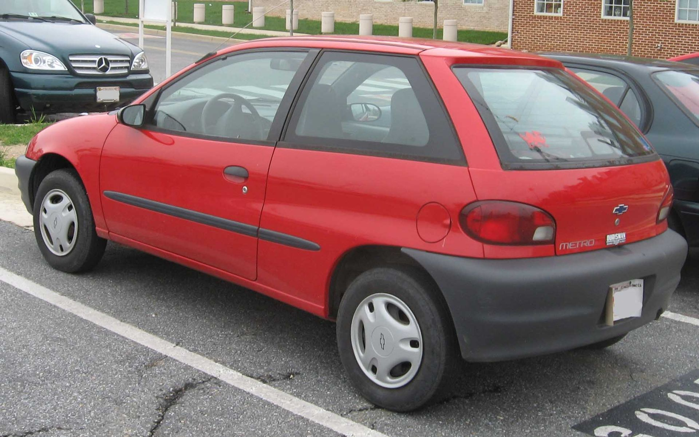
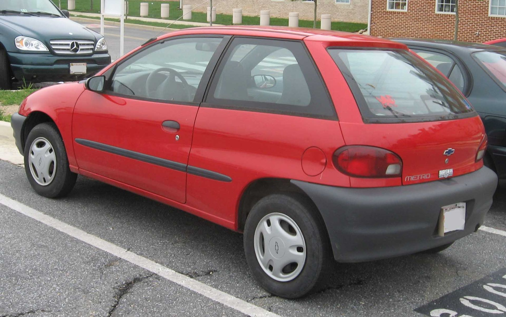

Histroy of the Geo Metro
I must say, the Geo Metro, a humble and unassuming automobile, emerged onto the world stage in the latter half of the 20th century. It was the product of a time when the world, still reeling from the tumultuous events of the past, yearned for economical and practical solutions to the challenges of a new era.
The Geo Metro, a product of collaboration between General Motors, Suzuki, and CAMI Automotive, was a paragon of fuel efficiency and frugality. Introduced in 1989, it promised a respite from the profligate excesses of the automotive industry and echoed the virtues of thrift and practicality.
This diminutive automobile, with its compact dimensions and efficient engine, symbolized a break from the past. It was a car born from necessity, designed to tackle the rising fuel costs and environmental concerns of the time. The Geo Metro was a vision of a world in transition, where sustainability and economy became the clarion call.

Though often criticized for its lack of power and modest design, the Geo Metro carved its own niche in history. It was a symbol of resilience, a testimony to the human spirit's ability to adapt and thrive in challenging circumstances. The car persevered through an era of changing values and expectations, providing an affordable and accessible mode of transportation for countless individuals.
The Geo Metro's legacy is one of pragmatism, a reflection of an age when simplicity and utility were virtues. In its own way, it contributed to the larger narrative of the automotive industry, demonstrating the adaptability and ingenuity that have been the hallmarks of human progress.
As the annals of history are filled with the grand exploits and monumental achievements of great men and nations, let us not forget the humble Geo Metro—a steadfast companion on the journey of modernity. Its story is a testament to the endurance of practicality and the indomitable spirit of human innovation.- Winston Churchill -on the Geo Metro
 
